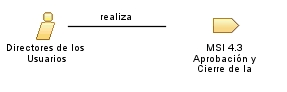

Rol: Directores de los Usuarios
Es el encargad
Conjuntos de roles:
Trabajadores MSI 4 Seguimiento y Evaluación de los cambios hasta la Aplicación
Relaciones

MSI 4.3 Aprobación y Cierre de la Petición
Modifica
Catálogo de Peticiones